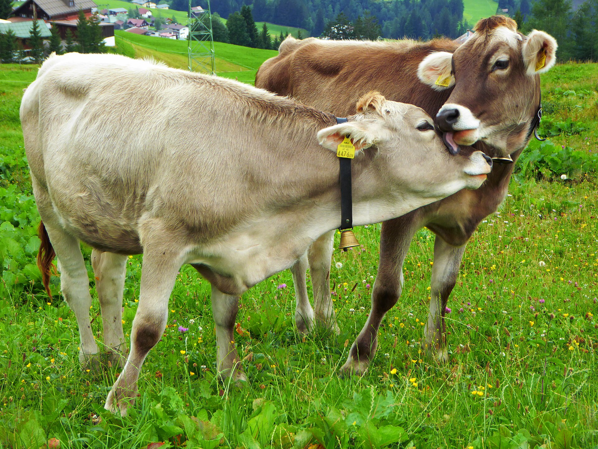
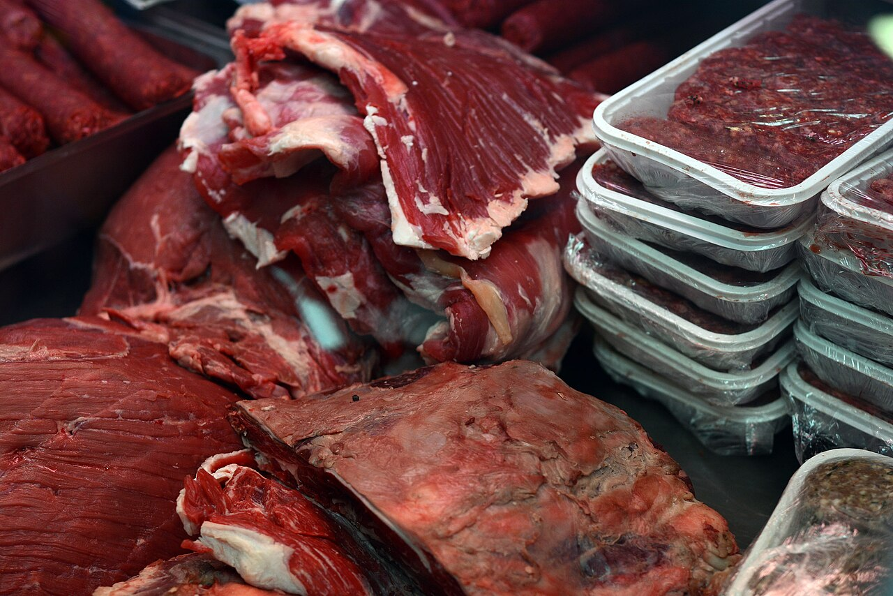
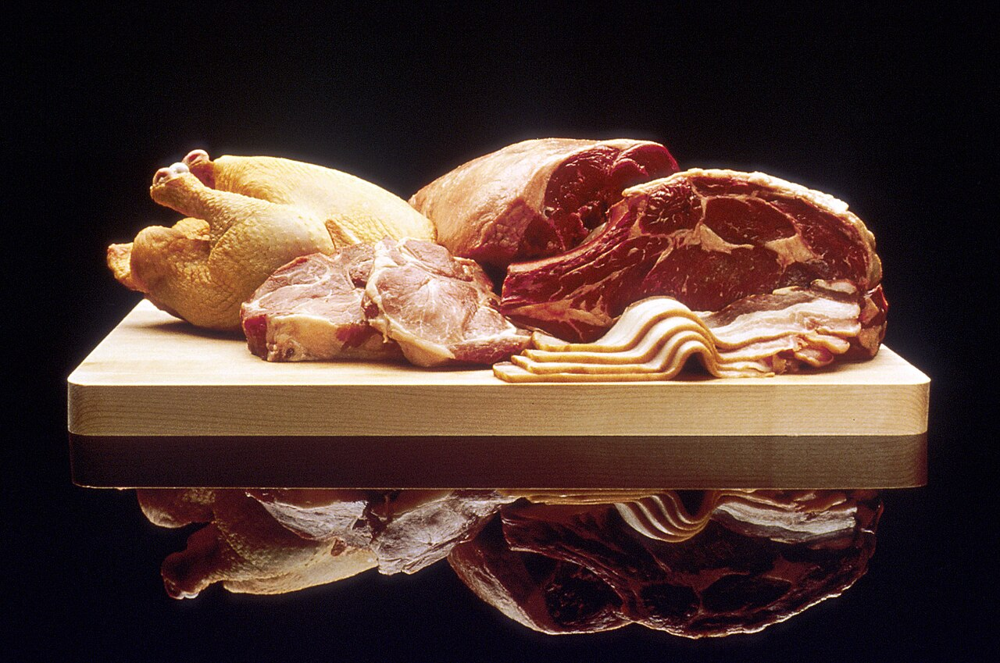
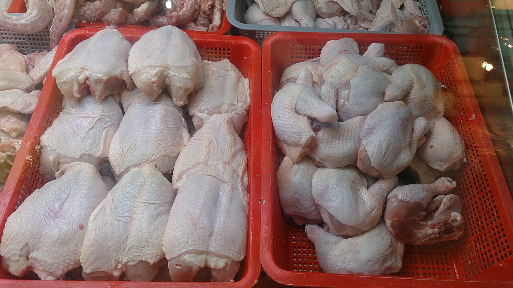
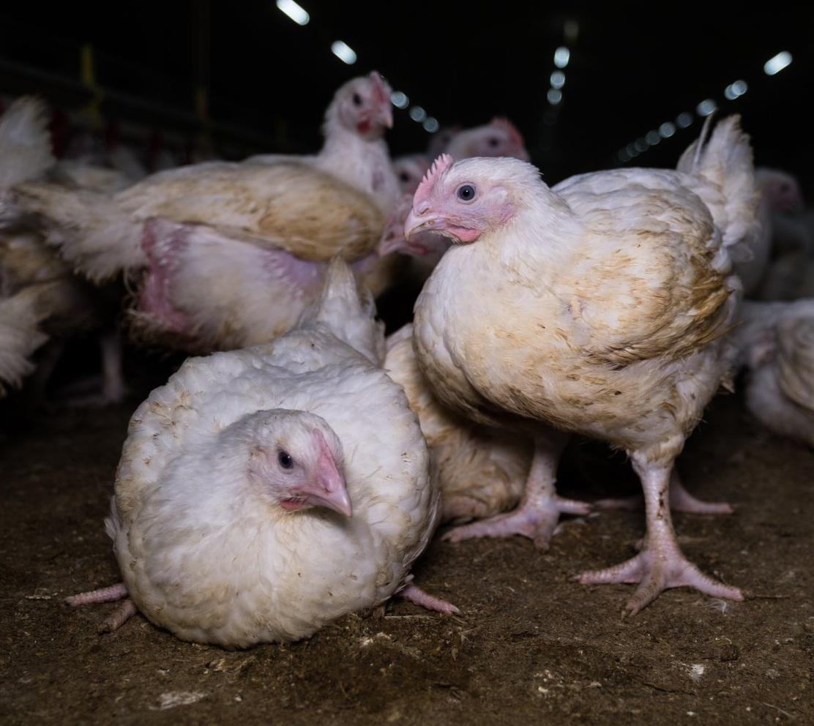
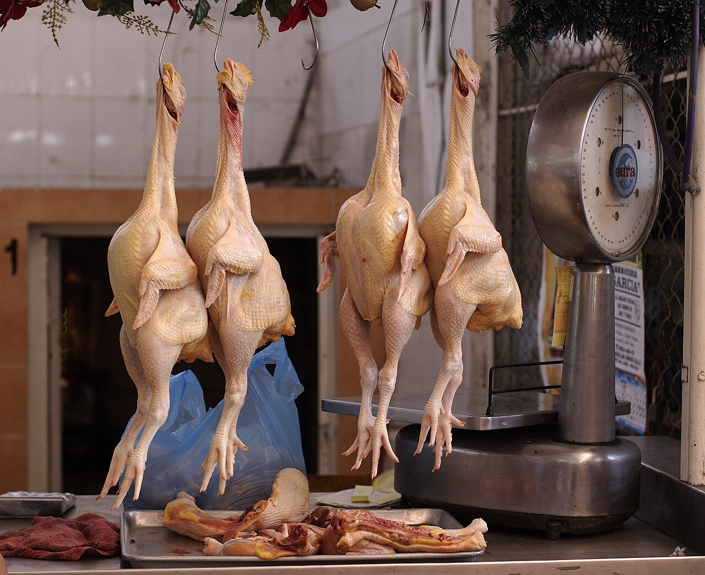
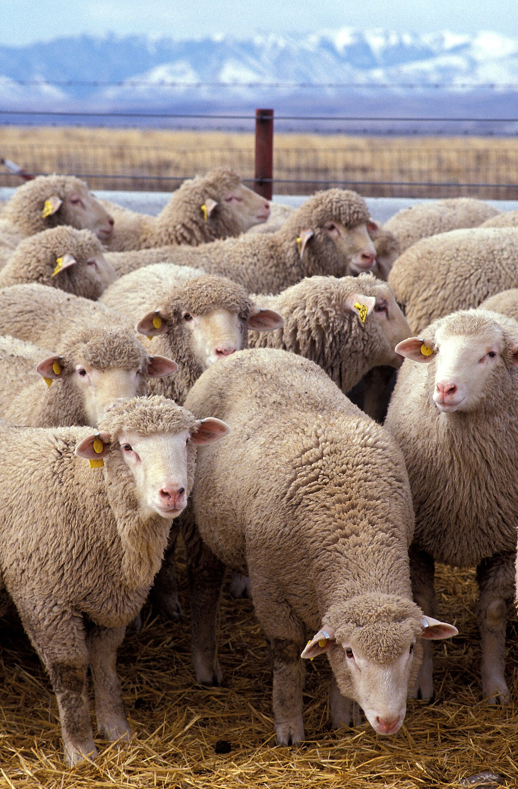

Négoce bovin, ovin, caprin & volaille
GNI Vivant commercialise des animaux vivants, des viandes et des produits carnés auprès des professionnels.
Le négoce du vivant, avec exigence
Nous achetons et revendons des animaux vivants et des produits carnés pour les boucheries, grossistes, restaurants et collectivités. Notre rôle : sélectionner les bons fournisseurs, contrôler les lots et organiser la livraison.
Du vivant aux produits carnés, six familles maîtrisées
Chaque famille est sélectionnée selon vos besoins : type d'animal, race, poids, format de découpe et destination. Une offre pensée pour les professionnels.

Notre métier : le négoce
GNI Vivant n'est pas un élevage. Nous achetons et revendons des animaux vivants et des produits carnés, en sélectionnant les fournisseurs et en organisant la livraison vers nos clients professionnels.
Notre expertise couvre les bovins, ovins, caprins, volailles, œufs et viandes, avec une attention constante portée à l'origine, à la conformité des lots et au respect des délais.
- Achat & revente : bétail vivant, viandes, volailles, œufs et produits élaborés.
- Sélection des fournisseurs : partenaires suivis et produits conformes aux normes.
- Contrôle des lots : origine, qualité et conditions de transport vérifiées.
- Logistique : livraison organisée selon vos volumes et votre calendrier.
Une viande ferme, saine et savoureuse
La qualité se décide bien avant la découpe. Nous veillons sur chaque étape, de la sélection des animaux au conditionnement, pour livrer des produits réguliers et d'une fraîcheur irréprochable.

- 01Sélection rigoureuse
- 02Abattage halal
- 03Froid maîtrisé
- 04Livraison suivie
Une viande persillée, ferme et fraîche, contrôlée à chaque étape de la chaîne.

Viandes transformées & préparations
En complément du bétail vivant, nous proposons des produits carnés et des préparations adaptés aux boucheries, restaurants et commerces de proximité.
Ce que nous vendons, nous le sélectionnons et le contrôlons
Avant d'être livré, chaque produit passe par notre sélection : fournisseurs suivis, lots identifiés et conditions de transport vérifiées.

Des volailles choisies selon le poids, l'âge et la conformation attendus.
Origine, qualité et conformité des lots vérifiées avant expédition.

Un transport organisé pour préserver la fraîcheur jusqu'à la livraison.
Nos produits, du vivant au fini
Un aperçu de la gamme que nous commercialisons au quotidien.
Qualité, traçabilité, conformité
Des engagements concrets pour un approvisionnement fiable et transparent.
Traçabilité
Origine des animaux et identification des lots à chaque étape.
Contrôle sanitaire
Suivi vétérinaire et respect des normes en vigueur.
Abattage halal
Partenaires agréés et pratiques conformes aux attentes du marché.
Chaîne du froid
Transport et stockage à température maîtrisée.

Un approvisionnement régulier, où vous êtes
Nous organisons la livraison selon vos volumes, votre calendrier et les contraintes de votre activité. Un interlocuteur unique suit votre commande de la demande à la réception.
Envie de commander du vivant ?
Bovins, ovins, caprins, volailles, œufs ou produits carnés : indiquez-nous vos besoins, nous vous répondons avec une offre et un délai.
Parlons de votre commande
Pour un devis ou une information sur nos disponibilités, contactez notre équipe.
Demander un devis
Précisez les éléments suivants pour nous permettre de répondre au mieux à votre demande :
- Type d'animaux ou de produits carnés
- Quantités estimées
- Fréquence et lieu de livraison
Réponse sous 24 à 48 h ouvrées.